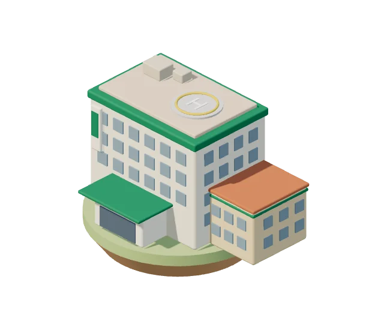
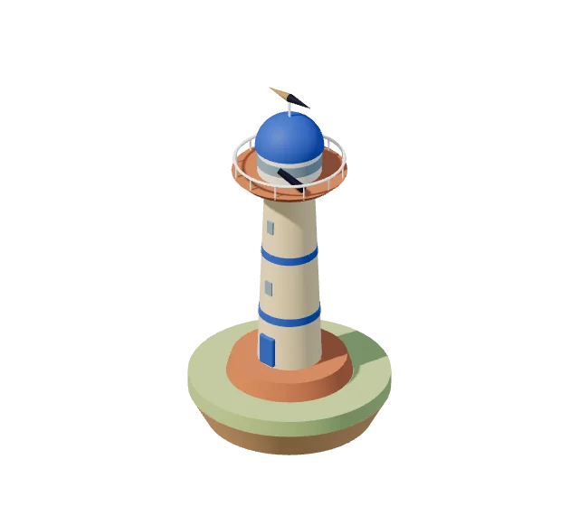
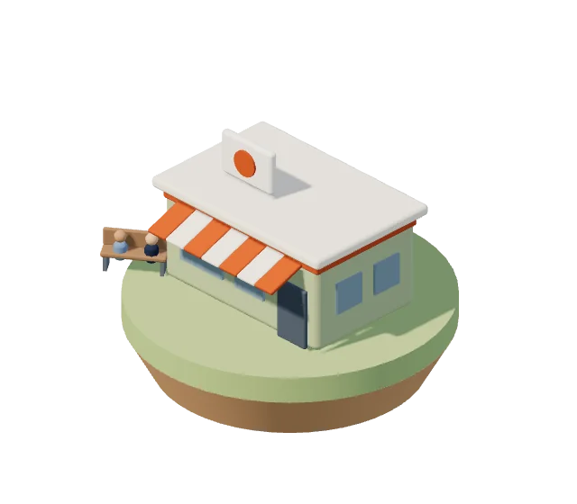
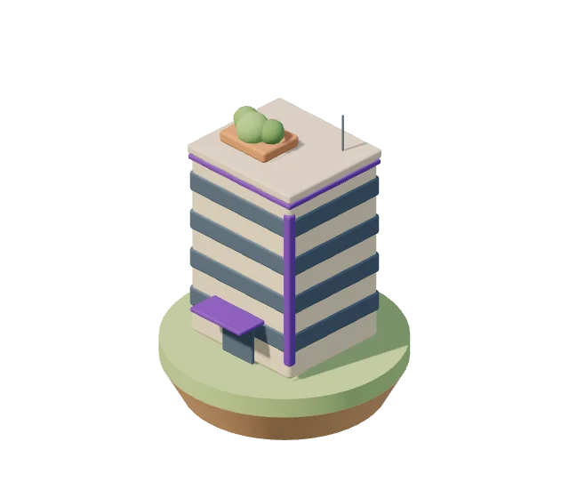
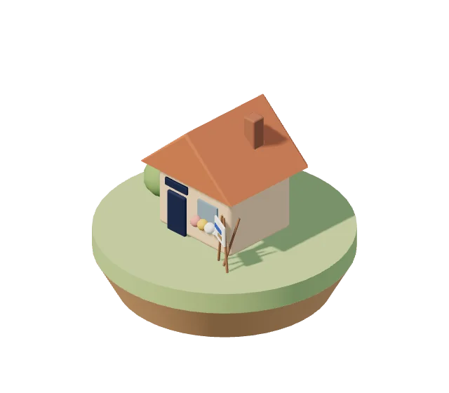

病院 ・ いつもの職場の中
業務
Hospital ・ Daily Work
明日の業務を楽にする ・ 3室
101 掲示じたくで、そのまま貼れるA4の掲示

展望台
キャリア
Observatory ・ Career
キャリア・経験を整理する ・ 7室
案内端末 ・ 実際の画面

クリニック
経営を学ぶ
Clinic ・ Learn Management
医療経営を学ぶ ・ 3室
スクリーン ・ 実際のゲーム画面
- 301クリニックタウン3Dクリニック経営を、1日ずつ動かして学ぶブラウザのゲームいまの版は v99.3
- 302ターンアラウンド12赤字クリニックを、12週で立て直す
- 303クリニックPMIクエスト承継直後の30日を、10問で診断する

事務所
経営・管理
Office ・ Management
経営・管理の実務に使う ・ 9室
案内ディスプレイ ・ 実際の画面
- 401RehaBoardリハ部門の運営を、1画面に紹介とデモ
- 402MedBoard外来の患者フローを、2施設で見比べる紹介とデモ
- 403HireBoard医療機関の採用を、カンバンで追う紹介とデモ
- 404面接官の手帖面接の質問を用意し、事実と印象を分けて記録する紹介
- 405ConsultSim1診と2診で、待ち時間がどう変わるかを試す紹介とデモ
- 406本部長の巡回手帖複数施設の巡回を、1冊の手帖に
- 407医療管理職スターター初めて管理職になった人の、チェックリストと記入式シート
- 408医療管理実務ライブラリ医療管理の実務手順と、無料テンプレート
- 409Reha Checklistリハ部門KPIのチェックリスト(PDF・スプレッドシート)配布ページ(別のサイト)
図書館
学習
Library ・ Study
学習を続ける ・ 3室
案内ディスプレイ ・ 実際の画面

町はずれのアトリエ
運営者
Atelier ・ About
理学療法士の橋本渉が、ひとりで運営しています
運営者
理学療法士 橋本渉
BRIDGE を、ひとりで運営しています
理学療法士 橋本渉
BRIDGE を、ひとりで運営しています
外に出てみると、病院で当たり前にやっていた調整や記録が、別の場所では別の名前で呼ばれていました。
正解を与えるのではなく、
選択肢を増やす
出入口見るだけで帰っても、それで十分です。